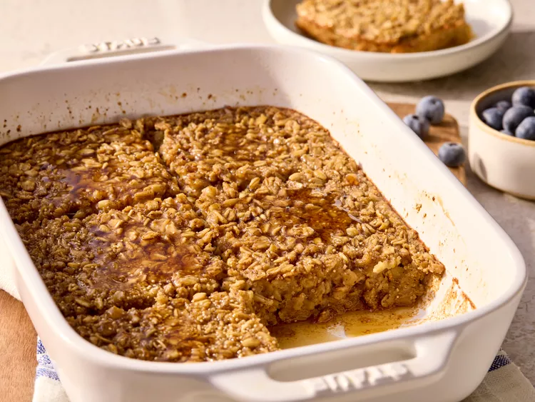

Overnight Baked Oatmeal

Description
Ever feel like you want a healthier breakfast, but couldn't be bothered to toil away for hours in the morning?
This delicious overnight baked oatmeal recipe will leave you comfortably stuffed and ready to take on the day!
Ingredients
- 2 large eggs
- 2 cups milk or unsweetened plant milk
- 1/4 cup maple syrup
- 1/4 packed brown sugar
- 1 tsp vanilla extract
- 1 tsp ground cinnamon
- 1/2 tsp salt
- 2 cups regular rolled oats
- 1/3 cup dry amaranth, buckwheat groats, or quinoa
Steps
- Gather all ingredients.
- Grease a 2-quart rectangle baking dish.
- Whisk eggs, milk, maple syrup, brown sugar, vanilla, cinnamon, and salt together in the prepared dish.
- Stir in oats and amaranth.
- Cover and chill at least overnight or up to 3 days.
- Preheat the oven to 350 degrees F (180 degrees C). Uncover and stir to re-incorporate all of the ingredients.
- Bake, uncovered, until golden brown and the center is set, 45 to 55 minutes.
- Let stand 10 minutes before serving. Serve warm.
Home